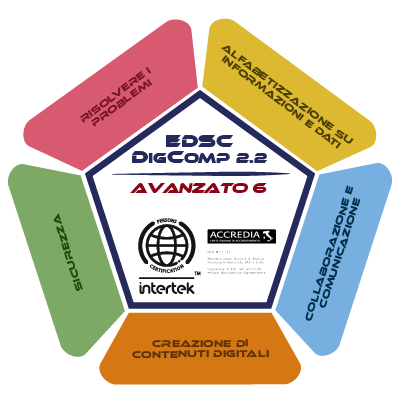
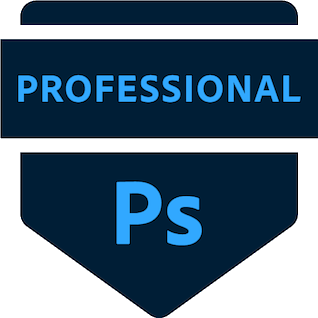

Summary
Highly motivated Architect with a strong passion for graphic design and web development, continuously pursuing up-to-date knowledge in technology.
Eager to transition into a Junior Graphic Designer or Web Designer role, leveraging a keen eye for aesthetics and design principles combined with a growing understanding of front-end technologies to create impactful digital experiences.
Education
-
The Complete Full-Stack Web Development Bootcamp
-
Front End Developer
- Talentform, Rome, Italy
- In progress
-
Digital Marketing with HTML, CSS, WordPress, and Artificial Intelligence Course
- Talentform, Rome, Italy
- June 2025
-
Master in Editorial Graphics - Web Design & E-commerce with Adobe Certifications
- Pc Academy, Rome, Italy
- May 2025
-
Office Operator with English Language Competencies Level A2 Course
- CFTA - Consorzio di Formazione e Tecnologie Avanzate, Milan, Italy
- May 2024
-
Pastry Techniques Course
- ALMA - The International School of Italian Cuisine, Colorno, Italy
- April 2022
-
Comprehensive BIM Course on Autodesk Revit
- GoPillar Academy (e-learning platform)
- November 2020
-
Bachelor's Degree in Architectural Design
- Politecnico di Milano, Piacenza (PC), Italy
- (Suspended)
-
Open Source Blender 3D/Video Editing Course
- Cortona 3D Pen Workshop (International workshop)
- July 2017
-
Interior Designer Course
- Tuo Corso (e-learning platform)
- November 2015
-
High School Diploma: Architecture and Environment
- Liceo Artistico Bruno Cassinari, Piacenza (PC), Italy
- July 2015
Work Experience
-
Graphics and Printing Operator - Wood Sector
- Koropack S.R.L., Fombio, Lodi, Italy
- September 2022 – December 2022
- Operated specialized machinery for wood processing, including cutting, sanding, milling, and carving for the production of wooden crates for food and beverages.
- Managed graphic design and programming for screen printing (water-based inks), hot stamping, and digital printing.
-
Pastry Chef Intern
- Pasticceria Santi S.R.L., Pizzighettone, Cremona, Italy
- July 2022 – August 2022
-
Fruit and Vegetable Department Assistant
- CONAD, Futura Store S.R.L., Codogno, Lodi, Italy
- July 2021 – February 2022
-
Associate Architect
- Studio Diciotto, Carlo Omini Architetto, Casalpusterlengo, Lodi, Italy
- September 2019 – November 2021
- Executed architectural and building design for new constructions and renovations of existing structures.
- Developed projects through various stages, including concept, preliminary, executive, definitive, and plant design.
- Prepared administrative procedures, technical documentation, and quantity surveys.
- Managed graphic and design tasks utilizing 2D AutoCAD and Photoshop software.
-
Architectural Intern - Smart Working
- Studio Diciotto, Carlo Omini Architetto, Casalpusterlengo, Lodi, Italy
- June 2019 – September 2019
- Supported architectural design processes, including drafting, documentation, and research for various projects.
Skills
Technical Skills:
- Graphic Design: Photoshop, Illustrator, InDesign, Canva, Figma
- Architectural Design: AutoCAD
- Web Design: WordPress, Dreamweaver, HTML, CSS, JavaScript, SEO
Soft Skills:
- Professionalism & Reliability
- Drive & Determination
- Proactive & Resourceful
- Organizational & Planning Skills
- Adaptability & Flexibility
- Creative Artistic Vision
Languages:
- Italian: native
- English: B1 - currently improving
Certifications
- DIGCOMP 2.2 Certification - Advanced Level 6
- Adobe Photoshop Certification
Others